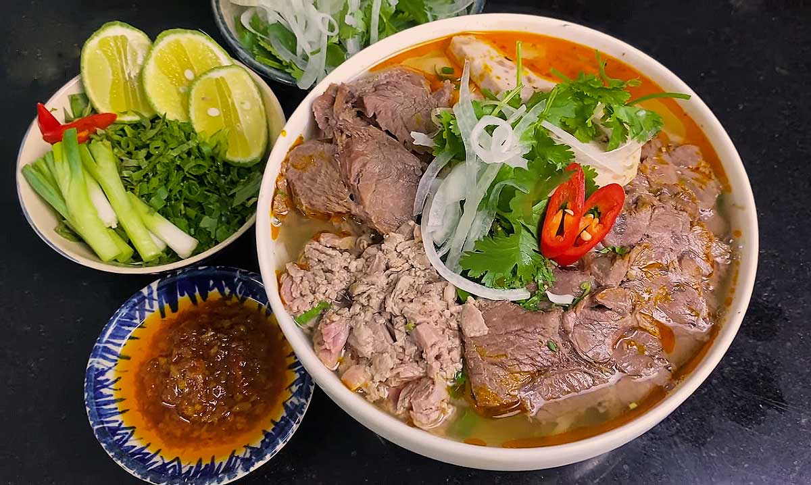

🍜Bún bò Huế
💁🏻♀️ Giới thiệu
Không chỉ là món ăn sáng đầy thân thuộc, Bún bò Huế luôn là niềm tự hào của người dân Cố đô. Món ăn đại diện cho sự cầu kỳ, tỉ mỉ và linh hồn của ẩm thực miền Trung. Một tô bún hội tụ đủ 5 vị: cay, ngọt, mặn, béo, bùi nhưng không cái nào lấn át cái nào.
🥣 Nguyên liệu chính
• Sợi bún nhỏ, dai theo đúng kiểu Huế xưa
• Thịt bắp bò, giò heo, huyết heo, chả cua
• Gia vị “linh hồn”: mắm ruốc và sả
🧑🍳 Cách chế biến
• Nước dùng ninh từ xương ống bò để lấy vị ngọt thanh
• Mắm ruốc được lọc kỹ, cho vào tinh tế để dậy mùi thơm
• Ớt màu chưng tạo lớp dầu đỏ hấp dẫn
💭 Mách nhỏ cho bạn
👉🏻 Thêm chanh, ớt và rau sống để tăng hương vị